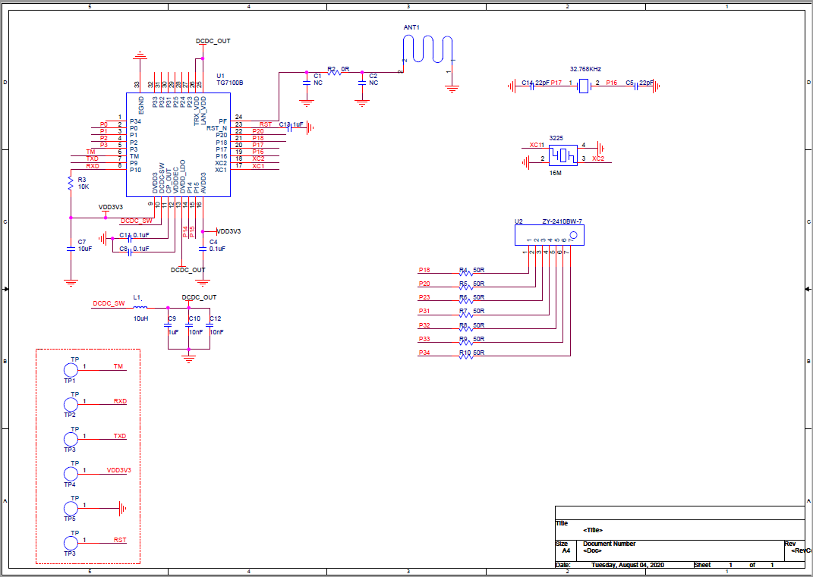

本文是一个数码管显示示例，通过手机APP下发数据，数码管进行显示，数码管选用ZY-2410BW-7做参考。

该应用主要实现了蓝牙广播、建立连接以及显示数字的功能，包括：
应用入口函数app_main()，主要实现如下功能：
代码分析：
x/*数码管头文件*//*PIN脚定义,P18,P20,23, 31, 32, 33, 34*/static uint8_t led_pin[7] = {18, 20, 23, 31, 32, 33, 34};int app_main(int argc, char *argv[]){ int ret; init_param_t init = { .dev_name = DEVICE_NAME, .dev_addr = NULL, .conn_num_max = 1, }; /* 板级初始化，各业务模块初始化 */ board_yoc_init(); LOGI(TAG, "Bluetooth uart server demo!"); aos_sem_new(&sync_sem, 0); /* 蓝牙协议栈初始化 */ ble_stack_init(&init); g_uart_server.uart_recv = uart_server_profile_recv; g_uart_server.uart_event_callback = user_event_callback; /* 注册蓝牙协议栈事件回调函数和接收事件回调函数 */ g_uart_server_handler = uart_server_init(&g_uart_server); if (!g_uart_server_handler) { LOGE(TAG, "init ble uart server demo faild"); } /* 数码管初始化 */ ret = digitron_init(led_pin, sizeof(led_pin)); if(ret) { printf("init digitron faild\r\n"); } /* 开始广播 */ ret = start_adv(); if(ret) { LOGE(TAG, "adv start faild"); } while (1) { aos_sem_wait(&sync_sem, AOS_WAIT_FOREVER); /* 等待接收数据并显示 */ digitron_show(g_show_data); } return 0;}xxxxxxxxxxstatic int uart_server_profile_recv(const uint8_t *data, int length){ g_show_data = 0; for(int i = 0; i < length; i++) { g_show_data |= data[i] << (i*8); } LOGD(TAG,"show:%d\r\n",g_show_data); digitron_show_off(); aos_sem_signal(&sync_sem); return 0;}
以CH6121开发板为例，示例程序的运行步骤为：
xxxxxxxxxx[ 0.004000][I][INIT ]Build:Aug 30 2020,18:36:42[ 0.024000][D][MTB ]mtb find 0x11005000[ 0.043000][I][INIT ]find 9 partitions[ 1.439000][I][UART SERVER DIGITRON]Bluetooth uart server demo!xxxxxxxxxx[ 375.024000][D][UART SERVER DIGITRON]show:1234